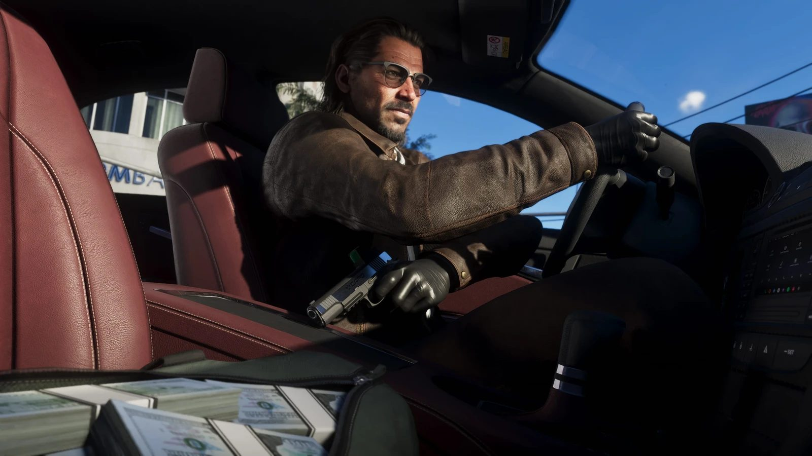

Fastest cars in GTA 6 — top speeds so far

The 7 fastest cars in GTA 6 (estimated top speeds)
All speeds are stock (no engine upgrades). Where to buy or steal each car, and what it costs, is not announced yet — only the edition and pre-order vehicles have a known source so far.
- 1. Grotti Itali RSX — ~135 mph (217 km/h), Sports, AWD. Inspired by the Ferrari SF90 Stradale. A Sports car that beats every supercar on current estimates. It first appeared in GTA Online's Cayo Perico Heist update, and you can see it racing in the GTA VI Extended Look. Rockstar has not officially named it yet.
- 2. Pegassi Tempesta — ~128 mph (206 km/h), Super, AWD. The fastest supercar. A mix of the Lamborghini Huracán and Centenario, first seen in GTA Online's Import/Export update. Rockstar officially showed it in the West Coast Customs collaboration — and there is also a police version in Vice Beach Police Department livery, so watch for it on patrol.
- 3. Pegassi Toros — ~127 mph (204 km/h), SUV. An SUV inspired by the Lamborghini Urus, faster than every supercar except the Tempesta on current estimates. A green Toros was spotted in an official GTA VI screenshot; Rockstar has not officially named it yet.
- 4. Progen Emerus — ~126 mph (203 km/h), Super, RWD. Inspired by the McLaren Senna, first seen in GTA Online's Diamond Casino update. You can spot it at the car meet near the end of the Extended Look, and Rockstar officially named it as one of the six cars West Coast Customs built in real life. Rear-wheel drive, so expect it to be harder to hold at top speed than the AWD cars above it.
- 5. Pegassi Zorrusso — ~125 mph (201 km/h), Super, RWD. Modelled on the Italdesign Zerouno, loved in GTA Online since 2019, and it appears in the first GTA VI trailer. Rockstar has not officially named it, so the name comes from the community. Also rear-wheel drive.
- 6. Truffade Thrax — ~124 mph (200 km/h), Super, AWD. Inspired by the Bugatti Divo. Another returning name from GTA Online, spotted in official GTA VI footage, though Rockstar has not officially named it yet.
- 7. Grotti Furia — ~122 mph (196 km/h), Super, AWD. The slowest supercar in the game on paper — but 122 mph is still plenty for most roads in Leonida. First seen in GTA Online in 2020, spotted in official GTA VI footage, not yet officially named by Rockstar.
Also near the top — order still settling
Below the top two, guides disagree slightly on the exact order. Other launch guides also put the Pfister Comet S2 Cabrio and the Invetero Coquette D10 (inspired by the Chevrolet Corvette C8) at around 130 mph, which would put them in the top three — but those figures come from GTA Online reference speeds rather than GTA 6 testing, so we are not ranking them above the cars above until in-game testing settles it. The same caution applies to the Bravado Banshee: one database lists it at 172 mph, another at around 118 mph, so we are leaving it out of the ranking entirely until a tested figure exists. If a speed looks too good to be true on day two, it probably is.
Fastest motorcycle in GTA 6
The Principe Alvino V1 is the fastest bike in GTA 6 on current estimates, at around 155 mph (249 km/h) — faster than any car on this page. This new sports bike takes cues from the Ducati Panigale V2, and you can see a group of armed robbers using it in the Extended Look. Rockstar has not officially named it, so the name comes from the badges on the bike. Other bikes in the estimates: Maibatsu Manchez ~139 mph, Nagasaki Carbon RS ~124 mph, Maibatsu Sanchez and Dinka Double-T ~118 mph. Treat the Manchez figure with extra care — it is a dirt bike, and 139 mph would be a huge jump from its GTA 5 performance.
What we do not know yet
- Where to find them: spawn locations and dealership prices for the fastest cars are not confirmed yet. We will add a location and price for every car as soon as they are confirmed in-game. (Not announced)
- Upgrades: whether engine and turbo upgrades raise top speed the way they did in GTA 5 is not confirmed yet. Expect stock and fully-upgraded speeds to be listed separately once testing is done. (Not announced)
- Pre-order and Ultimate Edition cars are not fast: the '95 Grotti Cheetah (Ultimate Edition) is estimated at only ~108 mph, and none of the edition bonus vehicles are near the top of this list — do not buy an edition for speed alone. See our GTA 6 price and editions guide for what each edition actually includes.
FAQ
What is the fastest car in GTA 6?
The Grotti Itali RSX, at an estimated ~135 mph (217 km/h) without engine upgrades. It is a Sports-class car, and it is faster than every supercar in the game on current estimates. (Reported, checked 20 November 2026.)
What is the fastest motorcycle in GTA 6?
The Principe Alvino V1, a new sports bike inspired by the Ducati Panigale V2, at an estimated ~155 mph (249 km/h) — faster than any car in the game on current estimates.
Has Rockstar published official top speeds for GTA 6 cars?
No. Rockstar has published no official top speeds or performance stats for any GTA 6 vehicle. Every speed on this page is an estimate from GTA 6 Bible's vehicle database, and we will replace each one with a tested in-game figure as testing finishes.
Planning your first sessions? Read what to do first in GTA 6 and how to make money — you will need the cash before any of these cars are yours. The cars drive across all of Leonida, mapped in our GTA 6 map guide.